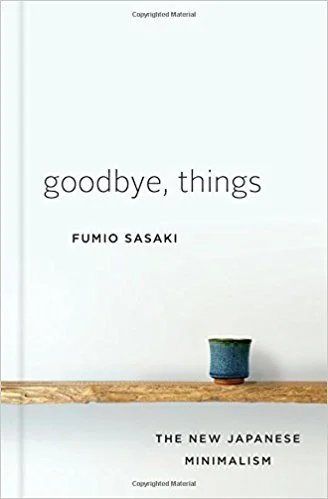

VÌ SAO MÌNH SỐNG THEO CHỦ NGHĨA TỐI GIẢN?

Cuối tuần vừa rồi, mình đã đến hiệu sách FAHASA để ngó nghiêng và mua sách. Ở đó bán rất nhiều sách, từ kinh tế, chính trị, kỹ năng sống hay lịch sử,… Nhưng rồi lúc ra về mình chỉ mua đúng một cuốn duy nhất, cuốn sách mà mình rất muốn đọc từ hồi ở Nhật nhưng chưa có cơ hội đọc. Cuốn sách mang tên “một cuốn sách về CHỦ NGHĨA TỐI GIẢN” của chị Chi Nguyễn (The Present Writer).
một cuốn sách về CHỦ NGHĨA TỐI GIẢN
Cầm trên tay cuốn sách, mình thực sự rất xúc động. Bởi đây là cuốn sách mà mình đã rất muốn đọc từ khi biết đến chủ nghĩa tối giản, nhưng đến giờ mới được cầm trên tay, bởi cho đến tháng 9 vừa rồi mình vẫn ở Nhật.

Chỉ trong buổi chiều tối hôm đó, mình đã đọc xong cuốn sách. Cuốn sách rất dễ đọc, một phần vì mình theo đuổi chủ nghĩa tối giản khá lâu rồi, cũng như thường xuyên theo dõi bài đọc của chị Chi nên mình nắm bắt được nội dung khá nhanh.
Mình đã đọc rất nhiều sách viết về chủ nghĩa tối giản như cuốn “Goodbye, things” của Fumio Sasaki, “The Power of Less” của Leo Babauta, hay “Minimalism” của Joshua & Ryan. Nhưng khi đọc sách của chị, mình vẫn thấy có gì đó rất mới mẻ, có lẽ bởi đây là cuốn được viết từ những trải nghiệm của chị Chi, một người đồng hương với mình, và bằng tiếng Việt. (Những cuốn sách kia mình đọc bằng tiếng Anh hoặc tiếng Nhật)
Cuốn sách còn giúp mình cân bằng lại những suy nghĩ trong đầu, bởi những ngày gần đây mình cảm giác như mình đang sắp bị cuốn theo một lối sống có phần hơi bận rộn và hối hả.
Những gì chị Chi viết trong cuốn sách thật sự rất đúng, đối với mình. Có những chỗ mình đọc mà đầu thì cứ gật gật lia lịa, xong miệng thì lẩm bẩm “chuẩn! chuẩn!”.
Là một cuốn sách nói về chủ nghĩa tối giản, nhưng nó không đơn thuần chỉ là như vậy. Đây còn là cuốn sách của sự-thay-đổi. Còn đối với mình, chủ nghĩa tối giản đã giúp mình thay đổi bản thân, theo một chiều hướng tích cực hơn.
Vì sao mình sống theo chủ nghĩa tối giản?
Câu chuyện về hai cuốn sách tiếng Nhật
Nói về trải nghiệm bản thân, mình biết đến cụm từ “tối giản” sau khi đọc cuốn sách của Sasaki Fumio. Mình đã có một bài viết cụ thể và cũng là bài viết đầu tiên về “minimalism”, các bạn có thể đọc nó ở đây.
Vứt bỏ và dọn dẹp đã giúp mình thay đổi cuộc sống như thế nào

Thường thì, chủ nghĩa tối giản thường bắt đầu từ việc vứt bỏ đồ đạc.
Sau khi vứt bỏ và dọn dẹp lại nhà cửa, mình cảm giác như đang được sống trong một căn nhà mới, hoàn toàn rộng rãi và sáng sủa.
Nhưng lối sống tối giản không chỉ dừng lại ở việc vứt bỏ đồ đạc
Mình nhận ra rằng việc vứt bỏ đồ đạc đó chỉ là một phần trong quá trình theo đuổi lối sống tối giản, hay gọi cách khác, tối giản ở chiều hướng vật chất.
Từ cuối tháng 5, mình bắt đầu viết luận tốt nghiệp, và đó cũng là thời điểm có nhiều vấn đề xảy ra, ví dụ như quan hệ bạn bè hay sức khỏe. Thời điểm tệ nhất có lẽ là tầm cuối tháng 6, khi mà World Cup diễn ra. Thức khuya xem bóng đá, bận rộn với luận văn, đầu óc đôi khi vẫn suy nghĩ linh tinh.
Thế rồi, mình tìm đến sách như là một liều thuốc tinh thần, và mình đọc được cuốn “The Power of Less” của Leo Babauta. Cuốn sách viết về sự đơn giản hóa tất cả những gì liên quan đến vật chất và tinh thần.
Nhờ đọc cuốn sách đó, mình có cái nhìn sâu sắc hơn về chủ nghĩa tối giản, rằng vứt bỏ đồ đạc không phải là tất cả. Tối giản hóa tinh thần cũng rất quan trọng. Mình bắt đầu loại bỏ những công việc, suy nghĩ linh tinh khỏi đầu óc, ưu tiên những việc cần làm, tập nói “không” với những thứ mình không thích. Từ một người sống vào kỳ vọng của người khác, mình hiện giờ sống cho chính bản thân mình.
Ngoài ra, mình cố gắng tạo cho bản thân những thói quen tốt, biến nó thành “routine” hàng ngày, qua đó mình sẽ không phải suy nghĩ nhiều và dành đầu óc cũng như thời gian cho những việc mình cần làm.
“Chủ nghĩa tối giản & Tư duy tích cực”
Đây là mục đầu tiên của chương 5 trong cuốn sách của chị Chi, và cũng là chương mà mình thích nhất.
Bản thân mình sau khi đã sống theo lối sống tối giản, mình cảm thấy như đầu óc mình lúc nào cũng luôn trong trạng thái “positive”, mà mình cũng không biết giải thích với các bạn như thế nào.
Trong đoạn đầu của chương 5, chị Chi có viết:
“Nếu Chủ nghĩa tối giản là một (trong những) con đường đưa con người đến với sự giải phóng tư duy và thay đổi cuộc sống theo chiều hướng tốt hơn thì tư duy tích cực như một ngọn đèn sáng soi rọi con đường ấy. Ngọn đèn này không những chỉ đưa ta đi đúng hướng, mà còn khiến cuộc hành trình thay đổi cuộc sống của ta nhẹ nhõm hơn và bình an hơn” (trang 118)
Từ khi sống theo chủ nghĩa tối giản, những lo âu về bệnh tật của mình gần như biết mất hoàn toàn. Càng lo nhiều, suy nghĩ nhiều thì chỉ càng khiến bệnh tình càng trở nên trầm trọng hơn. Thay vì than phiền về bệnh tật, mình dùng chính nội dung bệnh tật đó để dạy cho các sinh viên nước ngoài ở trên lớp, giúp các bạn ý có một cái nhìn rõ hơn về hệ tiêu hóa cũng như những căn bệnh liên quan. Đó chỉ là một trong những cách mà mình truyền năng lượng tích cực ra bên ngoài, bởi như chị Chi nói “không ai có thể duy trì mãi một cách tích cực nếu xung quanh mình toàn những người tiêu cực” (trang 139).
Kết
Ban đầu mình nghĩ rằng một người sẽ trở thành một minimalist là khi bạn vứt bỏ nhiều đồ đạc và sống một cuộc sống ít đồ. Thế rồi mình biết được rằng chủ nghĩa tối giản không chỉ dừng lại ở đó, mà còn giúp tinh thần chúng ta trở nên tốt hơn. Luôn duy trì một suy nghĩ, tư duy tích cực, và chia sẻ những năng lượng tích cực ra bên ngoài, đó là lí do vì sao mình sẽ luôn sống theo chủ nghĩa tối giản.
À, nếu bạn có hỏi thế nào là chủ nghĩa tối giản?
Bạn có thể tìm mua cuốn sách mình đã giới thiệu ở đầu bài, hoặc đơn giản hơn, bạn có thể đọc bài viết này của chị Chi nhé. Chị ý chính là minimalist blogger người Việt mà mình ngưỡng mộ nhất. Những bài viết của chị thật sự rất dễ đọc, và rất “calming”. Có lẽ phong cách viết của mình cũng một phần nào được ảnh hưởng từ việc đọc blog của chị ý chăng?


COMMENT
Tarobam 1 ngày trước
Ah the memories of watching Shelter for the first time, and now to re-live the feeling with Hiyumi singing it.
Justin Y. 1 ngày trước
Imagine traveling back decades and explaining to him that in the future, hundreds of thousands of people will be listening to his song on a supercomputer with a picture of a Japanese cartoon.
DigiNeko 2 ngày trước
Classic Masterpiece.